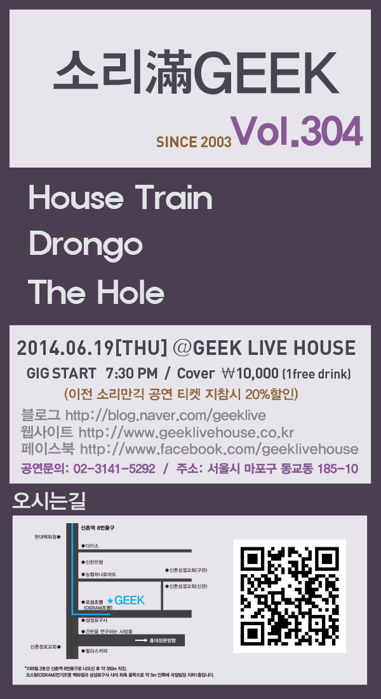

'긱 라이브 하우스(GEEK live house)'는 2003년 2월에 신촌과 홍대 사이의 요충지에 문을 열었습니다.
전통의 신촌 대표 음악 공연장으로써, '긱 라이브 하우스는' 대한민국의 음악 문화와 그 맥을 같이 하며 함께 호흡해 왔습니다.
프로뮤지션과 엔지니어가 협심하여 만든 공연장이니 만큼, 90~120석 가량의 소규모 공연장이지만 전문적인 셋팅의 음향과 LED 무빙 등의 화려한 조명, 여러 제반시설에서 언제나 뮤지션을 생각하고 함께 고민하고 있습니다.
아마츄어부터 프로까지, 밴드 음악과 어코스틱, 힙합 등 모든 장르의 각종 대관공연과 기획공연을 다양하고 꾸준하게 해 온 '긱라이브하우스'는,
대관 공연을 하시는 분들께는 녹화 영상과 함께 화려한 평생의 추억을,
프로 뮤지션들께는 양질의 공연으로 멋진 음악 생활의 한 페이지가 당당히 되기를,
마지막으로 공연을 보러 오시는 분들께는 쾌적하고 즐거운 환경으로,
그저 단순한 '관람' 이 아닌, 하나의 '공감' 과 '호흡'을 함께 느끼시기를 희망합니다.
무대위의 공연자와 관객, 공연장 모두가 더욱 빛날 내일을 그리며 대한민국 공연과 음악문화의 한 축을 꿋꿋이 자리매김해 나가며 진솔하고 감성이 닿아있는 문화 공간으로 건강한 에너지가 꿈틀대는 라이브 클럽 '긱 라이브 하우스'는 음악과 함께 하는 여러 분들을 늘 웃으며 기다립니다.
각 팀의 리허설 사운드를 그래도 저장 후 공연시 Recall 하여 사용할 수 있는 디지털 콘솔 YAMAHA O2R을 구비하여 공연시에도 깨끗한 사운드로 감상할 수 있는 PA 시스템(우퍼 / 서라운드 스피커 추가)을 비롯, Mesa-boogie, Marshall, Ampeg, Pearl, Shure & AKG Wireless system 등의 각종 프로페셔널 악기들로 더욱 고급스러운 사운드를 만들어내는 긱라이브 하우스만의 음향시스템을 경험해 보세요.
'음향의 긱'. 괜히 있는 말이 아닙니다.
GEEK LIVEHOUSE EQUIPMENT SET
MAIN CONSOLE - YAMAHA O2R
YAMAHA O2R
디지털 콘솔의 명기, YAMAHA O2R 입니다. 힙합이나 밴드나 매번 세팅을 달리 하지 않고 언제나 신속하고 적절히 대응할 수 있습니다. 특히 자주 하시는 분들은 세팅을 저장해서 더욱 시간을 줄일 수 있습니다. 디지털 콘솔 특유의 상호 채널 간섭이 적은 것도 매우 강점입니다.
SUB CONSOLE - EURORACK pro RX1202 FX
EURORACK pro RX1202 FX
CDP, PC 등 부가장치와, 여유 채널을 위한 서브 콘솔 BEHRINGER EURORACK pro RX1202 FX 입니다.
MAIN EQUALIZER - dbx 1231 / ALTO EQU131VU
dbx 1231 / ALTO EQU131VU
31밴드의 넉넉함과 고른 영역의 컨트롤은 MAIN SPEAKER로 나가는 소리를 풍성하고 샤프하게 만들어주는데에 일조하고 있습니다.
MONITOR EQUALIZER - ULTRA GRAPH pro FBQ 3102
ULTRA GRAPH pro FBQ 3102
아무리 밖으로 나가는 소리가 훌륭하다 한들, 무대 위에서 아티스트가 듣는 자신들의 소리나 반주가 엉망이라면 안 되겠죠?
FBQ 3102는 무대 위의 모니터 상황을 더욱 명료하게 해 줍니다.
EFFECTOR - YAMAHA SPX2000
YAMAHA SPX2000
공간계 이펙터 명기 중의 명기, YAMAHA SPX 2000 입니다. 자연스럽고 선명한 리버브와 딜레이 등을 담당하고 있습니다.
왜곡이 적고 샤프하게 걸리는 것이 특징입니다.
VOCAL PREAMP - ULTRA GAIN pro MIC 2200
ULTRA GAIN pro MIC 2200
보컬 프리앰프 BEHRINGER ULTRA GAIN pro MIC 2200입니다. 진공관 특유의 따뜻한 느낌과 색깔 있는 필터가 보이스에 매력 있는 칼라를 입혀주고 있습니다.
COMPRESSOR - MDX 2100 / S.COM STEREO COMPRESSOR
MDX 2100 / S.COM STEREO COMPRESSOR
MDX 2100은 마이크 컴프레서입니다. 로우컷 등과 단단한 느낌이 좋습니다.
S.COM STEREO COMPRESSOR는 드럼을 담당하고 있으며 자칫 뭉개지기 쉬운 드럼 소리를 밀도 있게 잡아주고 있습니다.
CROSSOVER - dbx 223XL
dbx 223XL
저음을 따로 분리하여 우퍼로 송출하고, 각 헤르츠 대역을 구분하는 역할을 하고 있습니다. 이로 인해 간섭 없이 더욱 명료한 소리를 느끼실 수 있습니다.
WOOPER SPEAKER AMP - CROWN MACRO TECH 3600VZ
CROWN MACRO TECH 3600VZ
파워앰프의 명가, 크라운의 MACRO TECH 3600VZ 입니다. 우퍼의 생명인 밀도 있는 댐핑감에 일조하고 있습니다.
MAIN SPEAKER AMP - CROWN XTi 4000
CROWN XTi 4000
메인 스피커 앰프 또한 크라운의 XTi 4000 입니다. 더욱 힘 있고 자연스러운 소리를 MAIN SPEAKER에 전달해주고 있습니다.
MONITOR SPEAKER AMP - SM 2400
SM 2400
모니터 스피커 앰프입니다. 정직한 소리를 전달하는 안정적인 앰프입니다.
MAIN SPEAKER - JBL SR 4733X
JBL SR 4733X
선명한 해상도와 강한 파워, 단단한 미들이 인상적인 JBL 의 명기 4733X 입니다. 공연장 내의 실사진입니다.
WOOPER SPEAKER - Ecler EPC 218
Ecler EPC 218
밴드건 힙합이건, 어느 형태의 공연에서도 따로 분리한 이 우퍼가 더욱 박력있는 저음을 선물해 줍니다. 가슴을 두드리는 저음을 느끼실 수 있습니다. 특히, 저음이 빈약한 공연장들과 구별되는 GEEK LIVE HOUSE 만의 특징 중 하나라고 할 수 있겠습니다.
MONITOR SPEAKER - EV SX 300
EV SX 300
명료하고 깨끗한 소리의 명기 EV 답게, 무대 위에서 더욱 정확하고 고른 모니터를 도와주는 EV SX 300 스피커입니다.
무대 좌우에 2기씩, 총 4기가 설치되어 있습니다.
MONITOR SPEAKER - FBT extrude 2.5a
FBT extrude 2.5a
드럼과 DJ 를 위한 별도의 모니터 스피커 FBT extrude 2.5a 입니다. ITALY 산 제품이고, 악기의 자체 소리가 큰 드러머와, 좀 다른 EQ 세팅을 원하는 DJ분을 위한 최적의 모니터를 제공합니다. 크기는 작지만 120W 고출력의 액티브 스피커입니다.
CDP - PIONEER CDJ 500S
PIONEER CDJ 500S
CDP 는 PIONEER CDJ 500S 입니다. 템포와 피치 조절도 가능하고, AUTO CUE 기능으로 PLAY/STOP 의 오류를 최대한 줄였습니다. PC 와 함께 MR 재생의 한 축을 담당하고 있습니다(본 장비는 대여품목이 아니라, 컨트롤 룸의 재생용입니다).
하이햇 (Bosphorus), 라이드, 차이나 (모두 Zildjian) 는 기본 제공이며, 크래쉬 심벌은 대여 (Bosphorus Gold series 16`` / 18``) 입니다.
스네어는 야마하 코퍼(Handcraft, Japan), 하이햇 스탠드도 야마하입니다.
모든 기통에 마이킹이 되어 있고 오버 헤드로 섬세한 공간음까지 잡아냈습니다. 페달은 벨트 타입 PEARL 싱글 페달입니다.
BASS AMP HEAD - AMPEG SVT 4 PRO
AMPEG SVT 4PRO
두 말이 필요없는 명기, AMPEG SVT 4 PRO 입니다. 간혹 보실 수 있는 저가형 베이스 앰프들과는 확연히 다릅니다. 자연스러우며 고급스러운 암펙의 톤이 그래픽 EQ와 함께 잘 묻어나옵니다. AMPEG 캐비넷에 연결되어 있고, LINE OUT으로 빠지고 있습니다.
BASS AMP HEAD(스페어용) - HARTKE HA5000
HARTKE HA5000
평소에 제공되고 있진 않지만, 스페어로 보관되고 있는 HARTKE HA5000 베이스 앰프 헤드입니다. HARTKE 4구 캐비넷도 보관되어 있습니다.
화려함과 부드러움! 다양한 효과를 낼 수 있는 LED 무빙과 파, 레이져와 포그 시스템 등으로 입체적으로 차별화된 조명으로 당신의 무대를 빛내드립니다.
더불어 다양한 편의시설을 제공해드리고 있습니다.
GEEK LIVE HOUSE Lights & Additional Facilities
조명 및 부대시설
조명사진
GEEK LIVE HOUSE 는 백그라운드 커튼 조명, 무대 전면 스포트 라이트와 하이라이트, 드럼 및 건반 스포트 라이트는 일반 220 파 조명이고, 소수의 할로겐을 제외한 나머지 조명은 모두 LED 입니다. LED 는 갖가지 총천연색으로 매우 화사하고 멋진 느낌을 주면서, 열이 나지 않아 무대 위에서나 밑에서나 덥지 않다는 장점이 있습니다. 또한 색상이나 효과도 즉각적이고 신속하게 바꿀 수 있습니다.
우측 LED
우측 LED
무대 우측의 LED 파 조명입니다. 물론 색상은 아주 다양하게 조합해서 쓸 수 있습니다.
좌측 LED
좌측 LED
무대 좌측 LED 파 조명입니다.
무대 무빙 LED
무대 무빙 LED
무대 무빙 LED 입니다. 갖가지 색과 다양한 움직임을 보여줍니다. 드럼이나 DJ 위 쪽에 설치되어 있습니다.
Effect LED
Effect LED
객석 뒤편에서 무대와 객석을 향해 효과를 주는 장치들도 마련되어 있습니다.
레이져
레이져
무대에서 객석을 향하는 레이져 효과입니다. 밑의 사진은 레이져 송출기이고, 머리를 부딪히실까봐 보호대를 부착해놓았습니다.
홀 무빙
홀 무빙
홀 무빙 2기입니다. 객석의 분위기를 후끈하게 띄워드리죠 ^^ 촬영 때는 켜지 않았지만, 실제 공연 때는 객석에서 미러볼도 2기가 돌아가게 됩니다.
포그(Fog) 머신
포그(Fog) 머신
모든 조명 효과에 빠질 수 없는 포그(Fog) 머신 ~ !!! 컨트롤룸에서 리모컨으로 작동됩니다. 대용량으로 순식간에 무대를 멋진 연기로 감싸 드리며 조명을 한층 빛내죠. 그 옆으로는 허큘리스 악기 스탠드가 보이는 군요.
조명 컨트롤 세트
조명 컨트롤 세트
음향 컨트롤 룸과 분리된 조명 컨트롤 세트입니다. 단순히 '껐다 켰다' 가 아닌, 전문적이고 입체적인 조명을 준비하고 있습니다.
* 이 외에도 싸이키라던지 각종 효과 조명들이 준비되어 있습니다. 멋진 조명 효과와 함께 화려한 주인공이 되시길 바랍니다.
전면 스크린의 실루엣
전면 스크린의 실루엣
무대 전체를 덮으며 내려오는 전면 스크린의 실루엣입니다. 영상을 쏴 드리는 곳은 저 스크린과 드럼 쪽 스크린 2개 중의 하나를 고르실 수 있습니다.
레이져 머신
레이져 머신
특별한 문구나 효과를 줄 때 사용하는, 무대 전면 스크린에 송출하는 레이져 머신입니다.
프롬프트 모니터
프롬프트 모니터
무대 중앙 위쪽에 자리잡은 프롬프트 모니터입니다. 가사나 공연 진행 순서등을 띄워드릴 수 있습니다. 물론 객석에서는 전혀 보이지 않습니다. ^^
에어컨
에어컨
공연자를 위한 무대 전용 에어컨입니다. 18평형으로 넉넉하고 쾌적하게 공연을 진행하실 수 있습니다. 아래사진은 객석용 인버터 냉난방기입니다. 2014년에 새로 공사하여 쾌적한 공연 관람을 하실 수 있습니다. 넉넉한 용량과 뛰어난 성능을 보여주고 있습니다.
이 외에도 적은 용량의 음료를 보관하실 냉장 공간, 충분한 환기 시설, 무대로 바로 이어지는 대기실 등 이 있습니다.
* 작업과 수령의 원활한 일정 조정을 위해, 티켓 신청은 공연일로부터 최소 1주일 전에 해주시길 부탁드립니다 * * 티켓 제작 완료 리플이 달린 후에, 내용 수정을 원하신다 해도, 재제작에 들어가면 불가피하게 요금이 발생하게 됩니다. 티켓 신청을 처음에 하실 때, 확실히 확인된 내용으로 올려주시길 바랍니다 *
!! 앞면의 스피커이미지부분은 딱지처럼 떼어서 책갈피로 사용하실 수 있게 후가공처리가 되어 있습니다. 1. 본 게시판(무료티켓서비스)에 새로운 게시글로 신청 2. 신청시 작성해주실 사항 : '내용'부분에 원하시는 내용을 적어주세요. 공연명, 출연진, 일시, 가격 등을 기재하시면 밑의 내용처럼 기본 텍스트로 '내용' 박스 안에 맞춰 작성해드립니다. (상단 이미지 참조) * 이미지 파일이나 별도의 작업 파일은 받고 있지 않습니다. * 1도 단색 (흑백) 으로 출력됩니다. 3. 사선 절취부분은 공연 당일에 입장 번호 등을 수기로 기재하실 수 있습니다(손으로 뜯으실 수 있도록 절취가공처리가 되어 있습니다). 4. 신청 시 제목에 반드시 대관하신 날짜를 정확히 기입해 주시기 바랍니다. 5. 티켓에는 기본적으로 별도의 넘버링이 되어 있지 않습니다. 절취선 안쪽에 직접 수기로 작업해주시면 됩니다.
티켓 외 인쇄물 신청 방법
* 티켓뿐 아니라 공연에 필요한 인쇄물이 필요하시면 (특수 티켓 제작, 포스터 등), 긱라이브하우스 제휴사인 티피디자인 을 통해 저렴하게 제작하실 수 있습니다. 02-1599-2344 혹은 www.ti2po.com 로 연락하시면 됩니다.
티켓 FAQ
Q1. 티켓 추가로 제작할 수 있나요? => 티켓은 기본적으로 150매 무료로 제공됩니다. 추가로 티켓 필요하실경우 유료로 제작해 드립니다. 50매추가 : 10,000원 / 100매추가 : 15,000원 / 150매 추가 : 20,000원 150매까지 필요없으시다면, 필요한 수량을 적어주시면 그만큼 출력해드립니다. Q2. 티켓제작 소요시간은 얼마나 걸릴까요? 제작은 일반적으로 2~3일 내에 완성됩니다(다만 날짜가 틀리거나, 기타 부정확한 내용이 있을시, 추가로 재확인 후 제작을 하기에 시일이 더 걸릴 수 있습니다). Q3. 완성된 티켓 수령은 어떻게 하나요? 티켓은 일반적으로 특별히 말씀 없으시면, 공연 당일날 현장 수령을 기본으로 하고 있습니다. 만약 그 전에 방문 수령하고 싶으시면, 작업 현황 확인후에(신청하신 글에 리플로 달립니다), 먼저 연락주시고 긱라이브하우스 공연장 으로 오시면 직접 수령하실 수 있습니다(위치는 하단의 약도 참조). * 다만, 공연장 휴무일에는 수령이 어려울 수 있으니, 반드시 며칠 전에 연락 주셔야 합니다 * Q4. 완성된 티켓은 택배로 받을 수 있나요? 신청하신 글에 꼬리말(혹은 비밀댓글)로 받으실분 상세 주소, 연락처(핸드폰 번호), 수령자이름을 적어주시면 택배로 발송해 드립니다. 우체국 택배이며, 택배비는 4,000원 가량의 착불이에요 ^^ (직접 수령하시는 편이 이익입니다) Q5. 포스터, 공연팜플렛 만들수 있나요? 티켓뿐 아니라 공연에 필요한 인쇄물 필요하시면 긱라이브하우스 제휴사인 티피디자인을 통해 저렴하게 제작하실 수 있습니다. 02-1599-2344 혹은 www.ti2po.com 로 연락하시면 됩니다
무대 전면 상단에 프롬프트(자막기)가 설치되어 있어, 공연중 Cue-sheet 및 가사를 확인하실 수 있습니다(직접 준비하시면, 저희쪽 노트북으로 옮겨 손쉽게 조작이 가능하십니다).
GEEK LICE HOUSE Prompt monitor
프롬트프 모니터
프롬트프 모니터
대관자분께서, 저희 쪽에서 대여해드리는 노트북을 통하여, 몇 곡이건 직접 컨트롤하며 무대에 전송해드릴 수 있습니다. 물론 여전히 객석에서는 전혀 보이지 않으며, 더욱 편안한 공연이 되실 수 있게 되었습니다. 항상 여러분을 생각하는 긱 라이브하우스가 되겠습니다. 감사합니다. * 가사는 메모장, 파워포인트 등으로 작업해서 USB 에 담아오시면 됩니다(보안과 사용상의 문제로 네트워크가 지원되지 않습니다). * 대여해드리는 노트북은 부팅시 자동 복구가 되도록 세팅 되어 있습니다(파일 관리 및 보안에 신경 쓰시지 않아도 됩니다). * 노트북의 고장이나 각종 이상시 제공되지 않을 수 있습니다. * 대여해드리는 노트북은 각별히 주의해서 사용해주시길 바라며, 음료를 쏟거나 사용자의 부주의로 인한 고장 발생이나 파손시 책임이 발생할 수 있습니다.
공연에 못 오시는 분들이 있거나, 공연을 알리고 싶으시며 실황중계로 공유를 원하시는 등등의 경우 제공됩니다.
GEEK LIVE HOUSE Afreeca TV
아프리카 생중계 서비스
afreecatv
12년 전통의 신촌 대표 공연장 '긱 라이브 하우스' 에서, 여러분들의 대관 공연을 '아프리카 TV' 로 생중계해드립니다 ~ !!! 신청하시고자 하는 분들은 공연 당일에 말씀 주시고, 원하시는 비밀번호를 설정해서 원하는 분들만 보실 수도 있습니다. 기본적으로 긱 라이브 하우스의 아프리카 방송방 주소는 http://afree.ca/geeklive 이며(로그인 X), 혹은 아프리카 검색창에서 'geeklive' 를 검색하셔도 나옵니다. 중계를 보시겠다면 해당 공연날짜와 시간에 접속하시면 되겠죠? ^^ 이제 공연장에 못 오시는 분들이나, 공연장에 오신 분들끼리도 이런 저런 말씀 나누실 수 있는 자리가 마련되었으니, 함께 하는 즐거운 공연이 되었으면 좋겠습니다. * 대관 공연의 중계방 개설시, 긱 라이브하우스는 개설과 관리만 해 드릴뿐, 대화나 총 진행에 관여하지 않습니다. * 화면은 720*576 해상도에 1000k 로 무대 고정 구도이며, 소리는 192/48khz로 현장 관객소리까지 같이 들어옵니다. * 공연 당일에 기계적인 사정이 생길 시, 본 서비스는 제공되지 않을 수도 있습니다.
긱 라이브 하우스는, 대관 공연시에 무료로 영상을 촬영해서 제공해드리고 있습니다. (단, 레코더의 고장이나 각종 기계 문제시 제공 못 해 드리는 경우도 있습니다) 일반적으로 공연 종료 후에 그 공연 대표자분께 공 DVD 에 파일로 구워서 드리는 방식이며, 공 DVD 에 굽기 위한 용량문제로 해상도는 640으로 고정되기 때문에, HD급 화질은 아니지만 충분한 공연 모니터링과 추억 보존용에 많은 도움이 되고 있습니다. 공연 대표자분이 공연자분들께 배포를 하시는게 일반적이지만, 간혹 전달을 못 받으시거나 여러 사정이 있어서 재요청을 하시는 분들이 종종 있어서 해당 신청 게시판을 만들게 되었습니다. * 아직 진행하지 않은 공연의 경우, 굳이 미리 신청을 하시지 않으셔도, 어차피 그날 대표자분께 DVD를 전해드리니 그쪽으로 전달 받으시는게 더 빠릅니다 * 통상 공연일로부터 1달여의 영상까지 보존하고 있습니다. 그 이전의 공연은 따로 문의 주셔야 합니다. 신청 방법은 간단합니다. 이 곳에 비밀댓글(주인만 보기) 로(개인정보 보호차원), 날짜, 받으실 이메일 주소와 문자나 연락 가능한 전화번호를 달아주시면 됩니다. 확인 후 전송 드리고, 마찬가지로 비밀답글 달아드리거나 따로 연락 드리겠습니다. 단, 모든 공연에 모든 공연자나 관련자분들이 신청을 하시면 저희도 업무를 감당할 수 없사오니, 1공연당 5회의 추가전송으로 제한하게 되는 점, 넓게 이해 바랍니다. - 기기 고장 및 각종 문제시 제공되지 않거나, 영상이 짤릴 수 있습니다.
공연 전에는 공연 내용과 공연장 위치 안내를, 공연 중에는 온라인 방명록처럼 실시간으로 사진도 업로드하며 함께 즐기는 장소로, 공연 후에는 언제든 돌아보실 수 있는 추억의 장으로 '무료 제공'해 드립니다.
GEEK Livepost
긱 라이브포스트 소개
공연 전 - 공연 내용 및 약도를 손님들에게 손쉽게 안내 공연 중 - 사진도 달며 실시간으로 방명록 기능 공연 후 - 언제든 찾아보실 수 있는 추억의 장 이제, 단순히 공연을 보고 끝내는 것이 아니라, 실시간으로 대관자나 공연자분들과 손님들이 소통할 수 있는 장이 마련된 것입니다. 또한 모든 내용은 '무료' 이며, 별도의 회원가입이나 로그인 없이, 기존의 'Facebook' 계정만 있다면 그 누구나 손쉽게 이용하실 수 있습니다.
긱 라이브포스트 방법과 순서
긱 라이브포스트
1. 이 카페의 '무료티켓서비스' 코너처럼, 이 곳 '긱 라이브포스트 서비스' 에 신청을 하십니다(신청하실 내용은, 아래의 내용을 긁어서 작성해주시면 됩니다). -------------------------------------------------------------- * 공연명 : * 간단한 한 줄 소개 : * 공연일자와 시간 : * 티켓 가격(티켓을 판매할 시) : * 안내 받으실 핸드폰 번호 : -------------------------------------------------------------- @ 참고 : 한 줄 소개는 말 그대로 한 줄 소개입니다. 티켓처럼 라인업을 모두 써놓는다던지 하기 힘듭니다. 또한 핸드폰 번호를 따로 기재하시지 않는다면, 해당 날짜의 대표자분께 안내 문자가 갑니다. 2. 그 후에, 저희 기본 폼에 신청하신 내용으로 제작이 들어가게 됩니다(상단 이미지 참조 - 많은 내용은 들어갈 수 없습니다). 3. 저희는 그 이미지를 긱 공식 페이스북( https://www.facebook.com/geeklivehouse )에 업로드합니다. 4. 해당 포스트의 주소를, 위에 작성하신 핸드폰 번호로 안내 받으십니다. ( https://www.facebook.com/geeklivehouse/posts/714116562016942 <= 이런 식의 주소가 됩니다). 5. 이제 손님들에게 공연을 홍보하거나 위치를 설명하실 때, 위의 주소를 문자나 카톡 등으로 손쉽게 안내하시거나, 해당 포스트를 자신의 페이스북 계정에 '공유'로 널리 퍼뜨릴 수 있습니다. 6. 공연 중에는 실시간 방명록이나 대화, 사진 업로드 등으로 함께 하는 공연이 될 수 있습니다. 또한, 그 내용은 그대로 저장되어 공연 후에도 언제든지 다시 즐거운 추억으로 돌아보실 수 있습니다.
- 최소 20만원 이상을 드셔 주셔야 전세 뒷풀이가 가능하십니다 - - 어떠한 외부 음식(주류 포함)도 반입이 안 되십니다 - - 무대 사용은, 매장과 상의 하에 진행하시면 됩니다 -
살롱노마드 소개
살롱노마드
멋진 공연 이후에 즐겁고 분위기 있는 뒷풀이 장소로, 이번에 저희와 제휴한 '살롱노마드' 를 추천해드립니다. 40명 정도가 수용 가능하시고, 좋은 음악과 유니크한 분위기,거기에 간단한 연주가 가능하신 음악 무대까지 있으며 저렴한 가격과 함께 공연장과 매우 가까운 이점(도보 5분 가량)까지 갖추고 있습니다.
살롱노마드 예약 안내와 약도, 단체 메뉴
살롱노마드
(약도를 설명드리면, 신촌역 8번 출구에서 '긱 라이브하우스' 쪽으로 올라오시다 보면 좌측에 있는 농협 안쪽 골목까지 쭉 들어가시면 위치해 있습니다).
살롱노마드 메뉴
살롱노마드
자체적으로 팔고 계시는 메뉴도 참고 삼아 보시면 도움이 될 것 같네요. ^^
예약시, '긱 라이브 하우스' 공연 후 뒷풀이 예약이라고 말씀 주시면 됩니다. 그리고, '살롱노마드' 는 저희와 제휴한 업체입니다. 즉, 저희 측에서 운영하는 곳이 아니기 때문에 '살롱노마드' 예약 등 관련된 모든 문의는 02-322-2615 / 010-3229-0615 로 문의 주시면 됩니다 ^^
대관안내
평일
금요일
토요일
일요일 및 공휴일
종일대관시 공연장 3시에 오픈되어 공연 1시간 전까지 리허설 진행됩니다.
종일대관시 무료티켓을 제공해드립니다. 자세한 제작방법은 무료티켓 메뉴에 설명되어 있습니다. 보다 자세한 문의는 전화상담으로 진행됩니다.
공연의 경우 파트타임대관은 불가합니다. (공연을 위한 최소한의 리허설과 준비시간을 고려하여 공연 파트타임 대관은 하지 않습니다.) 이벤트, 동호회, 각종 오프모임 등이 파트타임대관에 적절합니다.
대관료에는 음향, 조명 엔지니어 및 각종 시설 사용료가 포함되어 있습니다.(추가 이용사항 제외)
공연 러닝타임은 3시간입니다. 초과 시 30분당 5만원의 대관료가 추가 적용됩니다.
대관료에 크래쉬 심벌과 건반은 포하되어 있지 않습니다.(추가 이용사항 참고)
대관 예정일로부터 1개월 내 취소시 계약금은 환불되지 않습니다. 2주전 취소는 대관료의 50%를, 1주전 취소는 대관료의 80%를 위약금 청구가 발생합니다.
해당 공연의 Cue-sheet를 작성해 오시면 보다 원활한 공연진행을 하실 수 있습니다.
음향 및 조명 장비 리스트와 보유 악기 리스트 등은 대관안내 메뉴에서 환인 가능합니다.
공연 홍보자료를 geeklive@naver.com으로 보내주시면 카페 및 홈페이지에 노출 가능하오니 문의 바랍니다.
종일대관(15~22시)
320,000
450,000
600,000
480,000
파트타임대관(15시 이전)
70,000/H
80,000/H
100,000/H
100,000/H
심야대관(23~4시)
500,000
추가이용사항
턴테이블(무료)
Crash Cymbal
Bosphous Gold Series 16” 18” : 대여료 장당 15,000원
HI-Hat Cymbal, Ride Cymbal, China Cymbal : 기본제공
Keybord
KORG Triton pro 76건반 : 대여료 20,000원
YAMAHA MOX8 8건반 (해머 터치) : 대여료 30,000원
(심벌과 건반은 자체적으로 가지고 오셔도 무방합니다.)
기타 장비 이용사항
무대 / 관객 영상 녹화 시스템 (무료)
공연 실황 무대 영상을 시간으로 녹화, 저장하여 공연 후 퇴장하시기전까지 DVD에 저장하여 드리고 있습니다.
또한 관객 영상은 편집 후 3일 이내로 e-mail로 전송해드리고 있습니다.
무선 전동스크린
종일 대관의 경우 빔 프로젝터 사용은 무료입니다.
영상물을 준비해 오셔서 (DVD, 컴퓨터파일, USB) 사용 하실 수 있습니다.
(직접 영상 제작을 하지 않으셨다해도 관객 입장시 등에 뮤직비디오 상영 가능합니다)
무대 전면에 프롬프트 (자막기) 설치
메모장 혹은 파워포인트 작업해 오시면, 몇곡이던지 직접 저희쪽 노트북으로 옮겨 조작이 가능하십니다.
객석 쪽에서는 보이지 않으며, 공연 중에 무대 위에서 가사 및 특이사항, 곡 리스트 등을 참고하실 수 있습니다.
멋진 등장을 위한 무대 전면 막 (무료)
대관예약하기
대관 예약 순서
전화나 직접 방문 후 대관하시고자 하는 날짜를 문의하세요. 대관일 확정(가예약) 후 3일 내 선금(대관료의 30%)을 납부라시면 모든 예약은 완료가 됩니다. 선금은 긱라이브하우스를 직접 방문하셔서 납부하시거나 아래 계좌로 입금하시면 됩니다. 입금을 하실경우, 입금후 전화(02-3141-5292)로 입금자명을 확인해 주시기 바랍니다.
긱라이브하우스 입금계좌 신한은행 110-142-864175 예금주 / Geek 라이브 하우스 (양원식)
추가 공지 사항
대관 예약시, 밴드인지 힘합인지(힙합이라면 DJ가 따로 오시는지) 미리 말씀주시면 진행에 많은 도움이 됩니다.(드럼 설치와 해체 때문에 DJ 여부가 매우 중요합니다.)
일반적으로 공연 2~3일 전에 세부사항 확인전화를 드리고 있습니다. 자세한 내용과 문의는 그때 해주셔도 됩니다.
음료는 유이병은 안 되고, 캔과 PET만 가능하십니다. 바닥이 타일이라, 안전사고 및 공병 처리에 문제가 많습니다.
더불어 음악 공연장인 만큼, 냉장 시설이 협소하오니 너무 많은 양은 보관이 힘드시며, 안전사고와 악기 보호를 위해 별도의 인력이 각별히 관리 및 정리해주셔야 합니다.
물을 뿌리거나 마이크 파손, 악기 및 주변기기 고장 등에 관한 손해 배상이 있을 수 있습니다.
외부 음식물 (단체 도시락 등 식사류)은 반입이 안 되십니다.
공연 러닝타임 3시간 이후 추가요금(30분당 5만원)은, 3시간이 초과된 시점부터 즉시 발생합니다.(이는 10시 이후도 마찬가지입니다.)
주차는 유료로 1대 가량 가능하오나, 반드시 당일 공연장 측에 문의해 주셔야 합니다.
리허설은 원칙적으로 오후 3시부터 공연 시작 한 시간 전까지입니다. 이 한 시간 사이에 관객분들도 들어오시고, 공연장 스텝들의 식사시간 및 무대 정비 시간이 포함되어 있습니다.
다만, 대관 시간 자체의 변동이나 특수한 사정이 있을 경우, 반드시 현장측(010-3325-9480)과 한번 더 상세한 사전 조율을 해 주시길 바랍니다.
오디션 안내
긱라이브하우스(Geek Livehouse)는 라이브클럽문화의 발전, 그리고 나아가 우리나라 음악의 발전을 도모하며 많은 사람들이 함께 즐길 수 있는 문화공간으로써의 역할을 다하기 위해서 끊임 없는 노력을 기울이고 있습니다.
12년동안 신촌 및 홍대 음악 공연의 산 증인으로써 그 역할에 최선을 다하고 있는 긱라이브하우스,
저희 긱라이브하우스에서 항시 열리고 있는 기획공연(소리滿Geek, Geek Special Live 등..)을 지속적으로 함께 만들어 나갈 음악인들을 모집합니다.
자체 비공개 오디션 후 내부 회의와 여러 컨셉 조정을 거쳐 각종 기획 공연을 비롯한 다양한 기회를 드리고 있습니다.
다채롭고 실력 있는 음악인들이, 세상에 자신들의 음악세계를 당당히 펼쳐가는데에 힘을 보태고 싶으며,음악에 대한 열정과 사랑이 있으시다면 저희 긱라이브하우스와 함께 그 열정과 사랑을 더욱 키워 나가실 수 있는 시간이 되었으면 하는 바람입니다.
응모방법
우측 상단의 첨부파일( 오디션 신청서. doc 파일입니다)을 다운받아 작성 후, 메일( geeklive@naver.com )로 보내주시면 확인 후 연락 드립니다.
오디션 신청서 외에, 밴드나 팀에 관해 소상히 알 수 있도록 동영상, 음원과 영상(링크) 등 각종 도움이 될만한 자료들을 함께 보내주시면 큰 도움이 됩니다.
http://cafe.daum.net/geeklivehouse (대관 및 오디션 문의 게시판)
문의전화
02) 3141 - 5292
공연정보 & 갤러리
공연정보 & 갤러리 컨텐츠
소리滿Geek
'소리滿GEEK(소리만 긱)' 이란?
'소리滿GEEK' 은, 신촌 GEEK live house 에서 자체적으로 진행하는 기획공연으로써, '소리' + '滿(가득찰 만)' + 'GEEK' 의 합성어입니다.
그 발음대로 음악과 멋진 공연이 한데 어우러져 마음껏 만끽하시라는 뜻도 내포되어 있는데요, 2003년부터 쭈욱 신촌 홍대의 인디씬과 함께 해 온 전통의 라이브 하우스 GEEK 답게 300회에 달하는, 하나의 브랜드 공연인 '소리滿GEEK' 은 여타 신생 클럽이나, 그저 한두번 하고 마는 단발성 기획공연과 확연히 구별되는, GEEK 만의 정체성이자 존재이유이기도 합니다.
공연장으로써 덩그러니 장소만 있는 것이 아니고 문화예술과 공연이 함께 어우러지는 하나의 즐거운 장(場)이 기꺼이 되기를 바라는 GEEK 만의 마음, 더불어 관객도 뮤지션도 어느 쪽도 소홀히 하지 않겠다는 마인드가 진하게 녹아 있는 GEEK 만의 브랜드 공연이 바로 '소리滿GEEK' 인 것입니다.
이 공연에는 외부 초대나 여러 동기로 섭외되는 뮤지션도 있지만, GEEK 자체 오디션을 통해 자신들을 알릴 기회를 잡으시는 분들이 가장 많습니다.
많은 분들이 찾아오셔서 공연도 즐기시고 기회도 잡고 음악과 공연, 문화예술의 한 페이지를 당당히 장식하는데에 늘 참여를 기다리고 있습니다.
또, '이전 소리만긱 공연 티켓' 을 가지고 오시면, 입장료의 20%를 할인해드리고 있습니다.
언제나 멋진 무대와 출연진을 만들고 기다리고 있겠습니다.
관객으로 오셔도, 뮤지션으로 오셔도 언제나 열려 있는 '소리滿GEEK' 은,계속해서 하나의 브랜드 공연으로써 자리매김해 나아가겠습니다.감사합니다.

소리滿Geek
vol.310 소리만긱 Review
vol.310 소리만긱 포스터vol.310 소리만긱 상세 포스터
2014년 10월 23일 목요일, 신촌 GEEK Live house 에서 2014년의 스물 다섯번째 기획공연인 제 310회 '소리만긱'이, 완연해진 가을밤을 함께 했습니다. (이 날의 공연은, 긴급 공지해드린 대로 '티사운드' 분들이 사정상 참여가 힘드시게 되어 2팀이 조인트 콘서트 식으로 길게 공연하셨습니다)
미확인소음물체
두 팀 중 먼저 올라오신건 '미확인소음물체' 분들이셨습니다. '소리만긱' 에서는 종종 뵈었던 분들입니다. 멤버분들의 변동이 있었는데, 이제 안정된 모습을 보여주고 계십니다. '미확인소음물체' 분들의 음악은 일반적인 모던락과는 다른, 잔잔한 듯 개성 강한 사운드와 깔끔한 구성을 보실 수 있는데요, 소개해드리는 곡은 예전부터 해오시던 '택시 드라이버' 라는 곡으로써, 독특한 가사와 그들만의 색깔 있는 진행을 보실 수 있습니다. 팬 페이지 : http://www.facebook.com/unoisingob
Loney 7
마지막을 장식해주신 건 'Loney 7 (로니 7)' 분들이셨습니다. '소리만긱' 에서는 오랫만에 뵙는 분들입니다. 예전에 뵈었을 때는 남성 보컬분과 하드락을 하셨는데, 이번에 '이즈' 라는 여성 보컬분과 함께 하시면서 색깔이 확 바뀌었습니다. 기존 'Loney 7' 을 기억하시는 분들은, 아예 새로운 팀이라고 생각하셔도 되겠네요. 하지만 그 중에도 하드하며 진한 고유의 사운드는 여전합니다. 소개해드리는 곡은 여름에 작업하셨다는 '37.9' 입니다. 이외의 강한 곡들은 역시 공연장에서 직접 들어보시기를 권합니다. 팬 페이지 : http://facebook.com/loneyseven
이상 2014년 10월 23일 목요일, 310회차 '소리만긱' 에 대한 리뷰를 마치겠습니다.
vol.309 소리만긱 Review
vol.309 소리만긱 포스터vol.309 소리만긱 상세 포스터
2014년 9월 25일 목요일, 신촌 GEEK Live house 에서 2014년의 스물 두번째 기획공인 제 309회 '소리만긱' 공연이, 여름의 끝에서 반가운 팀들과 함꼐 열렸습니다.
사과를 삼킨 곰
첫 무대를 열어주신 건 '사과를 삼킨 곰' 분들이셨습니다. 감성적이며 깔끔한 모던락을 하시는 밴드입니다. 건반이 있던 초기 이후 또 더욱 안정되어가는 사운드를 들어보실 수 있으며, 일상적인 가사와 특유의 깨끗한 진행이 돋보입니다. 소개해드리는 곡은 가장 최근 곡이라는 '그때 그곳' 이라는 곡으로써, 기억에 남는 후렴구와, 멜로디컬한 베이스 라인, 기타 공간계의 상큼함이 돋보입니다. 팬 페이지 : https://www.facebook.com/43bear
코스믹칸
이어서 'COSMIC KHAN (코스믹칸)' 분들이 올라오셨습니다. 중독성 있고 개성 강한 신스 개러지 팀입니다. 특유의 유머러스함과 분위기가 있지만, 심플한 사운드 속에도 상당히 많은 내공이 담겨져 있습니다. 소개해드리는 곡은 '걷고 싶은' 이라는 곳으로써, 비틀즈 후기 스타일의 변화무쌍한 비트감과 프로그레시브함을 볼 수 있습니다. 이 곡이 끝나면서 드럼비트와 이어지는 '강아지' 라는 재밌는 곡은 직접 공연에서 보시길 권합니다. 팬 페이지 : https://www.facebook.com/cosmickhan
페이퍼백
이 날의 마지막은 'PAPER BAG (페이퍼백)' 분들이 빛내주셨습니다. 긱 라이브하우스와 좋은 인연을 이어가고 있으며 활발한 활동을 이어가시는 밴드입니다. 새로운 베이시스트 '동완' 님을 긱에서 처음 뵐 수 있는 자리였고요, 이전과 달리 보컬 이펙터나 MR 의 적극적인 사용으로 더욱 풍부하고 꽉 찬 사운드를 즐길 수 있는 무대였습니다. 힙합과 락의 조화로 그루브하면서 타이트한듯 신나고, 부담 없이 누구나 좋아할만한 밴드로써, 소개해 드리는 '안녕' 이라는 곡도 역시 그런 대표 넘버 중의 하나입니다. 팬 페이지 : https://www.facebook.com/paperbagrock
이상 2014년 9월 25일 목요일, 309회차 '소리만긱' 에 대한 리뷰를 마치겠습니다.
vol.308 소리만긱 Review
vol.308 소리만긱 포스터vol.308 소리만긱 상세 포스터
2014년 9월 18일 목요일, 신촌 GEEK Live house 에서 2014년의 스물 한번째 기획공인 제 308회 '소리만긱' 공연이 다가오는 가을 향기 속에서 열렸습니다.
사과를 삼킨 곰
이 날의 시작은 'Goodnight, patrasche (굿나잇, 파트라슈)' 분들이셨습니다. '소리만긱' 과 참 많은 공연을 함께 해 주신 분들입니다. 감성 발라드와 함께, 색다르면서 '굿나잇, 파트라슈' 의 색채가 짙은 모던락을 들려주고 계시는데요, 새로운 드러머 '정원' 님의 합류로 빛나는 무대였습니다. 부드러운 가사, 블루지한 기타와 함께 나날이 깊이감을 더해가고 있습니다. 소개해드리는 곡은 '하지마' 라는 곡으로써, 몽환적인 사운드와 풍부한 화음을 즐기실 수 있습니다. 팬 페이지 : https://www.facebook.com/bandgnp
렛츠
두번째로 올라오신 분들은 'Let`s (렛츠)' 분들이셨습니다. '소리만긱' 에서 종종 뵙던 분들이죠? 이 날의 무대는 더욱 타이트하고 호흡이 좋았습니다. 다양한 장르, 깔끔하고 신나는 무대와 함께 매끄러운 진행도 돋보입니다. 소개해드리는 곡은 'You and I' 라는 곡입니다. 렛츠의 타이틀 곡으로써 절절한 감정과 호소력 짙은 보컬을 들으실 수 있습니다. 이외 흥겨운 곡들은 직접 공연에서 보실 수 있습니다 ^^ 팬 페이지 : https://www.facebook.com/wearelets
엑시즈
마지막을 빛내주신 건 'AXIZ (엑시즈)' 분들이셨습니다. 수많은 크고 작은 무대에서의 경험이 녹아있는 실력파 밴드입니다. '긱 라이브하우스'와도 좋은 인연을 이어가고 있는데요, 한창 녹음 작업을 진행중이시라니, 곧 멋진 앨범과 함께 돌아오실 예정입니다. 깔끔하며 시원한 사운드와 정통적이 느낌이 액시즈만의 고유한 색깔인데요, 소개해드리는 곡은 'Happy' 로써, 에너지가 풍부하면서도 센스있는 구성이 재미있는 곡입니다. 팬 페이지 : https://www.facebook.com/bandaxiz
이상 2014년 9월 18일 목요일, 308회차 '소리만긱' 에 대한 리뷰를 마치겠습니다.
vol.307 소리만긱 Review
vol.307 소리만긱 포스터vol.307 소리만긱 상세 포스터
2014년 8월 7일 목요일, 신촌 GEEK Live house 에서 2014년의 스무번째 기획공인 제 307회 '소리만긱' 공연이 뜨거운 여름밤과 함께 했습니다.
나랑
'나랑' 분들이 그 날의 시작을 열어주셨습니다. '소리만긱' 에서 처음 뵙는 분들이죠? 감성 모던락 팀이자, 섬세한 감성과 일상적인 가사, 누구나 느끼며 살아가고 또한 잊어가는 감정에 대해 노래하는 팀입니다. 소개해드리는 곡은 '정지화상' 이라는 곡으로써, 모던하면서도 프로그레시브한 느낌이 잘 살아 있고, 시작과 끝에 묘한 여운을 남기는 곡입니다. 팬 페이지 : https://www.facebook.com/bandnarang
어나더 미
두번째로는 'Another Me (어나더 미)' 분들이 올라오셨습니다. 마찬가지로 '소리만긱'에서 처음 뵙는 분들입니다. 저희의 공개오디션 기획공연인 'GEEK 1st DAY ( http://blog.naver.com/geeklive/220050318130 )' 로 먼저 인사드렸었는데요, 남성적이면서도 힘 있는 사운드와 진중한 무대를 보실 수 있습니다. 소개해드리는 곡은 '너에게 가고 있어' 라는 곡입니다. 기억에 잘 남는 후렴과 깔끔한 연주가 어우러져서 생동감 있고 흥겨운 조화를 보여주고 있습니다. 다른 헤비한 곡들도 언젠가 소개해드리겠네요. 팬 페이지 : https://www.facebook.com/anotherme1030
IMGL
이 날의 마지막은 'IMGL' 분들이 마무리해주셨습니다. 왕성한 활동으로 그 영역을 넓혀가고 있는 'IMGL'. 하드록부터 발라드까지 넓은 스펙트럼을 열정적으로 펼치시는 분들입니다. 연주와 호흡이 더욱 탄력을 받아가는 느낌인데요, 저희 공연장에서도 늘 좋은 무대를 보여주고 계십니다. 소개해드리는 곡은 'Make my life' 로써, 타이트한 그르부와 락킹한 진행에 파워풀한 무대가 빛났습니다. 어코스틱 버스킹도 종종 하신다니까, 색다른 반전의 재미도 느끼실 수 있겠네요. 팬 페이지 : https://www.facebook.com/bandIMGL
이상 2014년 8월 7일 목요일, 307회차 '소리만긱' 에 대한 리뷰를 마치겠습니다.
vol.306 소리만긱 Review
vol.306 소리만긱 포스터vol.306 소리만긱 상세 포스터
2014년 7월 17일 목요일 제헌절, 신촌 GEEK Live house 에서 2014년의 열 여덟번째 기획공인 제 306회 '소리만긱' 공연이, 2014년의 뜨거운 여름 7월에 열렸습니다.
곱창에 소주
이 날의 시작은 '곱창에 소주' 분들이 열어주셨습니다. 재미있는 팀명과는 다르게, 잔잔하면서도 애절한 감성 모던락 밴드입니다. 이 날은 평소와는 다른 구성으로, 밴드 '찬찬히' 의 김규찬님이 리드기타(빨간 모자를 쓰신)를 맡아주셔서 평소와 조금 다른 느낌의 무대였네요. 소개해드리는 곡은, 보컬 손지훈님의 개인적인 경험에서 쓰신 곡이라는 '이젠' 이라는 발라드곡입니다. 절절한 분위기와 절제된 사운드에 호소력 있는 후렴구가 인상적입니다. 팬 페이지 : https://www.facebook.com/gnsband5P
미확인소음물체
이어서 '미확인소음물체' 분들이 바톤을 이어받으셨습니다. '소리만긱' 과는 긴 시간을 함께 해 주신 밴드입니다. 이 날의 리드기타이신 박현웅님이 이 공연을 끝으로 사정상 못 하시게 되고, 곧 새로운 멤버분과 함께하실 텐데요, 멋진 무대로 다시 뵐 수 있으면 좋겠습니다. '마확인소음물체' 분들의 시니컬한듯 묘한 느낌의 곡들은 여러 곡들에서 알 수 있는데요, 자작곡이 아닌 커버곡 'Smells like teen spirit' 을 올려드립니다. 'Nirvana' 의 전설적인 곡이죠? 감각적인 편곡과 멜랑꼴리하면서 파워 있는 무대를 보실 수 있습니다. 팬 페이지 : https://www.facebook.com/unoisingob2
엑시즈
마지막 무대는 'AXIZ(엑시즈)' 분들이 빛내주셨습니다. 유명세를 타게 한 KBS TV 의 'Top band' 후에도 다양하고 많은 활동으로 더욱 단단해지고 원숙해지는 느낌의 밴드입니다. 그 힘 있고 열정 가득한 무대는 영상보다는 역시 직접 보셔야 아실 겁니다. 소개해드리는 곡은 '20세기 소년' 으로써, 현대적인 느낌과 정통적인 느낌이 잘 어우러져있으면서 센스 있는 연주와 신나는 분위기가 두드러지는 곡입니다. 무엇보다, '한 팀' 으로써의 오랜 호흡을 잘 보실 수 있겠네요. 팬 페이지 : https://www.facebook.com/bandaxiz
이상 2014년 7월 17일 목요일, 306회차 '소리만긱' 에 대한 리뷰를 마치겠습니다.
vol.305 소리만긱 Review
vol.305 소리만긱 포스터vol.305 소리만긱 상세 포스터
2014년 6월 26일, 목요일 신촌 GEEK Live house 에서 2014년의 열 일곱번째 기획공인 제 305회 '소리만긱' 공연이, 2014년의 반을 보내는 6월 말에 열렸습니다.
굿나잇, 파트라슈
작년 초부터 '소리만긱' 과 꾸준히 함께 하신 분들입니다. 이 날은 다른 날과는 조금 다른 의미가 있는 공연이었던게, 드러머 '홍신' 님과 함께 하는 마지막 무대셨습니다(이 라인업으로의 첫 무대도 작년의 '소리만긱' 이셨다는군요). 아쉽지만, 새로운 멤버와 재정비 후 더 좋은 모습으로 그리 멀지 않은 시간에 돌아오신다고 합니다. 소개해 드리는 곡은 '불안해' 로, 굿나잇 파트라슈의 초기부터 함께 해 온 곡입니다. 점점 서로에게 흔들리는 남녀의 불안한 감성이 섬세하게 잘 살아있는 모던 곡이면서, 블루지한 기타 연주 또한 돋보입니다. 팬 페이지 : https://www.facebook.com/bandgnp
64
두번째 무대로는 'learz(64) 님이 올라오셨습니다. '소리만긱' 과는 긴 시간을 함께 해 주신 밴드입니다. 공연 전에 긴급 공지해드린 대로, 이 날 원래 참여하기로 했던 '64' 밴드가 급한 상황으로 멤버 전원이 못 올라오시게 되면서, '64' 의 기타리스트인 'learz' 님의 기타솔로 무대로 색다르게 꾸며졌습니다. 소개해드리는 곡은, 약 7년전 유투브에서 자그마치 천만건 이상의 조회수를 기록했다는 '캐논' 으로써, 익히 알고 계시는 '캐논의 변주곡' 을 화려한 테크닉과 함께 개성 있게 편곡하셨습니다. 익숙한 곡이니 더 감상하시기 좋겠네요. 팬 페이지 : https://www.facebook.com/Band64
더 팬시
분위기를 조금 바꿔볼까요? 'The Fancy(더 팬시)' 분들이 마지막으로 올라오셨습니다. 스트레이트하고 힘 있는 뉴메틀 밴드입니다. 그렇다고 너무 하드코어한 느낌이 강해서 대중들에게 힘든 음악이 아닌, 파워 있고 재치 있는 편곡과 좋은 톤을 그루브함 속에서 들어보실 수 있습니다. 소개시켜 드리는 곡은 '고래사냥' 으로써, 익히 알고 계시는 곡이라도 'The Fancy' 가 하면 이런 느낌이다라는 걸 잘 아실 수 있습니다. 관객과의 호흡도 좋았던 공연이네요. 팬 페이지 : https://www.facebook.com/bandfancy
이상 2014년 6월 26일 목요일, 305회차 '소리만긱' 에 대한 리뷰를 마치겠습니다.
vol.304 소리만긱 Review
vol.304 소리만긱 포스터vol.304 소리만긱 상세 포스터
2014년 6월 19일, 목요일 신촌 GEEK Live house 에서 2014년의 열 여섯번째 기획공인 제 304회 '소리만긱' 공연이, 화끈한 라인업과 함께 여름밤을 뜨겁게 달궜습니다.
하우스 트레인
이 날은 'House Train(하우스 트레인)' 분들이 그 시작을 열어주셨습니다. '소리만긱' 에서는 처음 뵙는 분들이죠? 'House Train(하우스 트레인)' 은, 저항과 사회의 부조리를 고발하는 시대정신을 갖고 있는 팀입니다. 소개시켜드리는 곡은 '반딧불이' 로써, 일제 강점기에 반딧불이로 돌아오겠다며 가미가제로 뛰어들 수 밖에 없던 한국인의 아픔을 노래하고 있습니다. 열정적인 무대매너와 타이트한 분위기가 돋보입니다. 팬 페이지 : https://www.facebook.com/housetrain1
드론고
이어서 달아오른 분위기는 'Drongo(드론고)' 분들이 이어주셨습니다. 'Drongo(드론고)' 는 '기묘한 어둠을 이야기하는 록밴드' 라는 슬로건 답게, 음울하면서도 아주 개성 있는 음악을 하는 팀입니다. 저희 '소리만긱' 과는 긴 인연을 이어오고 있는데요, 앨범 수록곡이자 대표곡 중 하나라고 할 수 있는 '거품' 을 소개해드립니다. 몽환적이면서 묘한 분위기와 함께 꿈틀거리는 그루브가 인상적입니다. 팬 페이지 : https://www.facebook.com/BandDrongo
더 홀
화끈한 마무리는 'The Hole(더 홀)' 분들이 빛내주셨습니다. 정통적인 느낌과 파워풀한 무대를 보여주시는 팀입니다. 소개시켜 드리는 곡은 'Number One(넘버원)' 으로써, 락킹한 느낌과 함께 꽉찬 사운드와 정열적인 보컬을 들어보실 수 있습니다. 다른 영상은 소개시켜 드리지 못 했지만, 넘치는 에너지와 매끈한 진행 또한 돋보이는 밴드입니다. 팬 페이지 : https://www.facebook.com/BandTheHole
이상 2014년 6월 19일 목요일, 304회차 '소리만긱' 에 대한 리뷰를 마치겠습니다.
vol.303 소리만긱 Review
vol.303 소리만긱 포스터vol.303 소리만긱 상세 포스터
2014년 6월 12일, 목요일 신촌 GEEK Live house 에서 2014년의 열 다섯번째 기획공인 제 303회 '소리만긱' 공연이, 발랄한 라인업과 함께 열렸습니다.
IMGL
강렬한 시작은 'IMGL' 분들이 열어주셨습니다. 각종 공연과 버스킹으로 활발하게 영역을 넓히며 활동하시는 팀입니다. 늘 '젊은 패기' 라는 말에 걸맞는 무대를 보여주시고 있고요, 점점 진보하며 꽉 차가는 느낌이 매우 좋습니다. 하드락부터 발라드까지 폭 넓은 음악을 하시는 팀이시고요, 소개시켜드리는 곡은 'Pride' 라는 곡으로, 앵콜을 받아서 하신 곡입니다. 타이트한 연주와 보컬이 인상적인 곡입니다. 팬 페이지 : https://www.facebook.com/bandIMGL
코스믹칸
두번째 무대는 'Cosmic khan(코스믹칸)' 분들이 바톤을 이어 받으셨습니다. 신스 개러지 밴드답게 아주 개성적인 음악을 하시는 팀입니다. 쉬우면서도 귀에 남고, 그루브하면서도 묘한 느낌을 갖는 곡의, 흔하지 않은 색깔의 혼성 밴드인데요, 신나고 댄스틱한 노래도 있지만, 소개시켜드리는 곡은 '럭키 스타' 라는 곡으로써, 기억에 남는 멜로디와 재밌는 구성이 돋보이는 곡입니다. 팬 페이지 : https://www.facebook.com/cosmickhan
더 홀
이 날의 마지막 무대는 '호랑이 아들들' 분들이 장식해주셨습니다. '소리만긱' 에서는 처음 뵙는 분들이죠? 기억에 강하게 남을 팀명의 '호랑이 아들들' 입니다. 3인조 블루스 락앤롤 밴드라는 이름에 걸맞게, 진하고 정통적인 색채가 강하신 팀입니다. 소개시켜 드리는 곡은 'Come to my bed' 로써, 끈적하고 진중한 분위기의 블루스 색채가 강한 곡입니다. 신나는 락앤롤 넘버는 역시 직접 보셔야겠죠? 팬 페이지 : https://www.facebook.com/sonsoftiger
이상 2014년 6월 12일 목요일, 303회차 '소리만긱' 에 대한 리뷰를 마치겠습니다.
vol.302 소리만긱 Review
vol.302 소리만긱 포스터vol.302 소리만긱 상세 포스터
2014년 6월 5일 현충일 하루 전, 목요일 신촌 GEEK Live house 에서 2014년의 열네번째 기획공인 제 302회 '소리만긱' 공연이, 부쩍 여름 소식을 들고 함께 찾아왔습니다.
사과를 삼킨 곰
첫 순서로 '사과를 삼킨 곰' 분들이 무대를 열어주셨습니다. 보컬분이 스타일이 좀 바뀌셨죠? 그리고 지금 건반분이 안 계셔서 이전보다는 다른 모습일 수도 있겠네요. 하지만 그렇다고 사운드가 비거나 하진 않으셨습니다. 소개시켜드리는 곡은 'Endless trip' 으로, 사과를 삼킨 곰의 EP 수록곡입니다. 유머러스한듯한 팀 분위기와 달리 절절한 감성이 잘 녹아 있는 팀이자, 강렬한 후렴이 인상적인 곡입니다. 팬 페이지 : https://www.facebook.com/43bear
모넬로
이어서 두번째로 'Monello(모넬로)' 분들이 올라오셨습니다. 활동을 시작하신지 얼마 안 되었지만, 왕성한 활동을 보여주시는 팀입니다. 소개시켜드리는 곡은 'Green light' 라는 곡으로써, 보컬 분 말씀처럼 TV 프로그램 '마녀사냥'의 테마 송이 된다면 정말 좋겠군요 ^^ 깔끔한 진행과 모던한 매력, 흥겨움을 동시에 느낄 수 있는 팀입니다. 팬 페이지 : https://www.facebook.com/band.monello
렛츠
마지막 무대로는 'Let`s(렛츠)' 분들이 마무리해주셨습니다. 발랄한 분위기와 함께 펑키한 느낌도 있으신 팀입니다. 소개해드리는 곡은 그 중에서도 'Here I am' 이라는 곡으로써, 차분하지만 열정적인 분위기가 진중하게 담겨져 있습니다. 보컬분은 이 날 부상투혼(?)을 빛내며 멋진 무대를 보여주셨습니다. 다음 공연때는 또 더욱 액티브한 무대를 보여주실 예정입니다. 팬 페이지 : https://www.facebook.com/wearelets2
이상 2014년 6월 5일 목요일, 302회차 '소리만긱' 에 대한 리뷰를 마치겠습니다.
vol.301 소리만긱 Review
vol.301 소리만긱 포스터vol.301 소리만긱 상세 포스터
2014년 5월 15일 스승의 날, 목요일 신촌 GEEK Live house 에서 2014년의 열세번째 기획공인 제 301회 '소리만긱' 공연이, 초여름밤 같은 선선한 날씨 속에서 열렸습니다.
곱창에 소주
그 처음은 '곱창에 소주' 분들이 열어주셨습니다. '소리만긱'에서는 두번째 뵙는 분들입니다. '곱창에 소주' 라는 독특한 팀명과는 다르게, 차분한 모던 발라드 팀이십니다. 이전보다 더 깊어진 사운드와 매끄러운 진행을 보실 수 있습니다. 특히 '이젠' . 'ㅠㅠ' 등이 호소력 짙은 넘버이니 주의 깊게 들어보시면 좋을 것 같네요. 팬 페이지 : https://www.facebook.com/gnsband5P
모넬로
그리고, The Woozy(더 우지)' 분들이 그 바톤을 이어 받으셨습니다. '소리만긱' 에서는 처음 뵙는 분들이죠? 3인조 로큰롤 보이밴드라는 이름 답게, 깔끔한 컨셉에 흥겨운 로큰롤을 보여주시고 있습니다. 약간 개러지 풍도 나면서, 스트레이트하지만 블루지함도 동시에 갖고 있어서 여러가지 매력을 보실 수 있는 팀입니다. 앞으로도 좋은 공연으로 또 뵐 수 있으면 좋겠네요. 팬 페이지 : https://www.facebook.com/thewoozy
렛츠
이 날의 마무리는 'Paperbag(페이퍼백)' 분들이 장식해 주셨습니다. 감성 힙합 밴드이시면서, '소리만긱'과는 꾸준히 함께 해 오신 분들입니다. 공석이었던 베이스 멤버분의 자리를 반년간 도와주시던 세션분과의 마지막 자리였습니다. 아쉽기도 하지만, 정식 멤버를 구하셨더니 또 다른 페이퍼백의 모습을 곧 보실 수 있겠네요. 언제나 그렇듯 꽉 찬 사운드 속에, 개성적이고 그루브한 무대였습니다. 특히, 여러 분들이 아실만한 커버 메들리를 준비하셔서, 호응과 함께 분위기를 돋구시는 모습도 참 좋았습니다. 팬 페이지 : https://www.facebook.com/paperbagrock
이상 2014년 5월 15일 목요일, 301회차 '소리만긱' 에 대한 리뷰를 마치겠습니다.